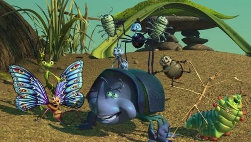
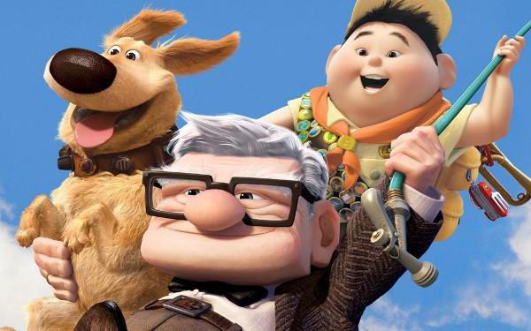
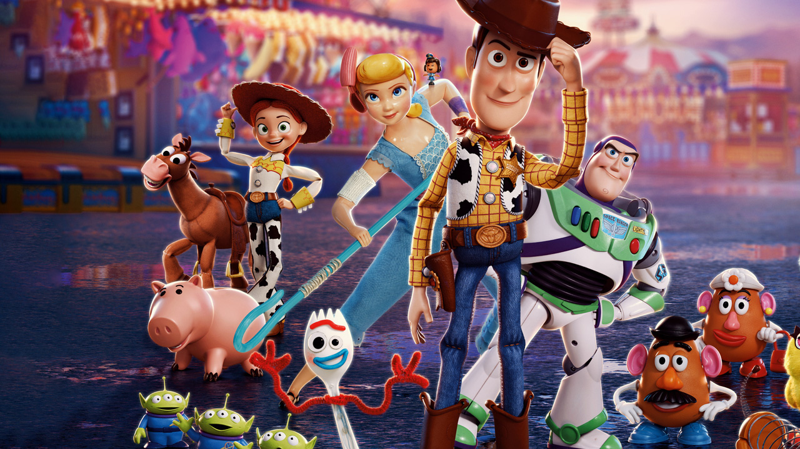

Pixar удивляют
Пожалуй, самым громким прорывом в современной анимации можно считать выход «Истории игрушек» 1995 года: этот полнометражный мультфильм студии Pixar положил начало засилью трехмерной анимации на экране и постепенному отмиранию плоской. «История игрушек» стала продолжением идей, заложенных еще в «Жестяной игрушке» 1988 года: именно там у Джона Лассетера появилась мысль сделать игрушки героями собственной истории.

Pixar буквально открыл ящик Пандоры: именно «История игрушек» показала огромный потенциал трехмерной анимации как самостоятельного медиума, а не только способа создания спецэффектов (к этому времени уже успели выйти «Терминатор 2: Судный день», «Трон» и «Парк Юрского периода»: все они сочетали практические эффекты и компьютерную графику). В дальнейшем самые крупные достижения закрепятся именно за Pixar, а практически каждый следующий проект будет добавлять новые технологии. Например, «Приключения Флика» станут первым мультфильмом с симуляцией мягких тел и растений.
Вторая часть «Истории игрушек» вновь открывает новые горизонты: помимо появления в кадре людей на куда большее время (спасибо преодолению эффекта зловещей долины) здесь появилась симуляция тканей, что позволило создать знаменитую сцену с зашиванием руки ковбоя Вуди (кстати, кукольником выступает герой короткометражки «Игра Джери» все той же студии).
Отклонившись от нашествия Pixar, уместным будет вспомнить мультфильм 2001 года «Финальная фантазия: Духи внутри нас». Он считается одной из первых попыток создать по-настоящему реалистичных людей и преодолеть эффект зловещей долины. Несмотря на финансовый провал и критические отзывы, отрицать графические достижения здесь попросту нельзя.

В сравнении с небольшими шагами предыдущих мультфильмов настоящим прорывом можно считать «Корпорацию монстров»: здесь студия сумела создать полноценную симуляцию волос, что подарило зрителям Салли — синего мохнатого монстра, чья шерсть ведет себя довольно реалистично.
«В поисках Немо» сумел открыть миру реалистичную симуляцию жидкостей: кажется, что подводный мир нарисовать не так уж сложно, но не стоит забывать о кислородных пузырьках и поверхности океана, о поведении персонажей, попадающих в водные завихрения, а также то, как свет преломляется в воде.
«Суперсемейка» продолжала развивать предыдущие достижения (ткани, волосы, лицевая анимация), а следующим технически важным проектом стали «Тачки»: зеркальные поверхности, реалистичная ржавчина, сцепление колес и асфальта, а также огромное количество одновременно присутствующих на экране моделей.
«Рататуй» впервые показал намокание поверхностей, а также здесь появилась важная технология разрезания моделей: для сцен готовки нарезание овощей могло стать настоящей головной болью и обернуться сотней моделей ломтиков, но с новыми технологиями все стало куда проще.
«Вверх» вновь бьет количественные рекорды: к примеру, дом поднимает в воздух 20622 шарика, каждый из которых является отдельной моделью. А еще это первый мультфильм студии, показанный в 3D-формате, из-за чего Pixar столкнулась с совершенно новыми проблемами дизайна отдельных сцен.
«Храбрая сердцем» — первый трехмерный мультфильм, в котором у персонажа курчавые волосы: одновременно приходилось обсчитывать более миллиона волосинок, закрученных в тысячи завитков.
Дальнейшие улучшения графики привели к тому, что отдельные детали в «Истории игрушек 4», последнем на сегодняшний день мультфильме студии, попросту не отличимы от реальности: чаще всего в пример ставят появление в кадре кошки, но стоит обратить внимание на жидкости и освещение, а также поведение поверхностей (взаимодействие материалов с жидкостями, светом и друг с другом). Наконец-то пастушка Бонни действительно выглядит как фарфоровая фигурка.
